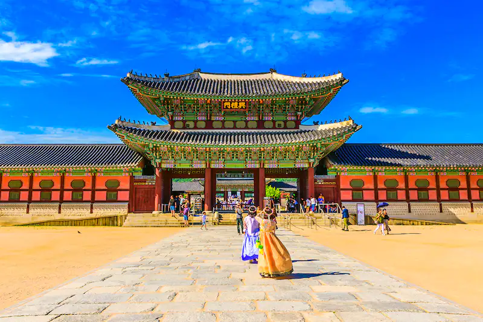
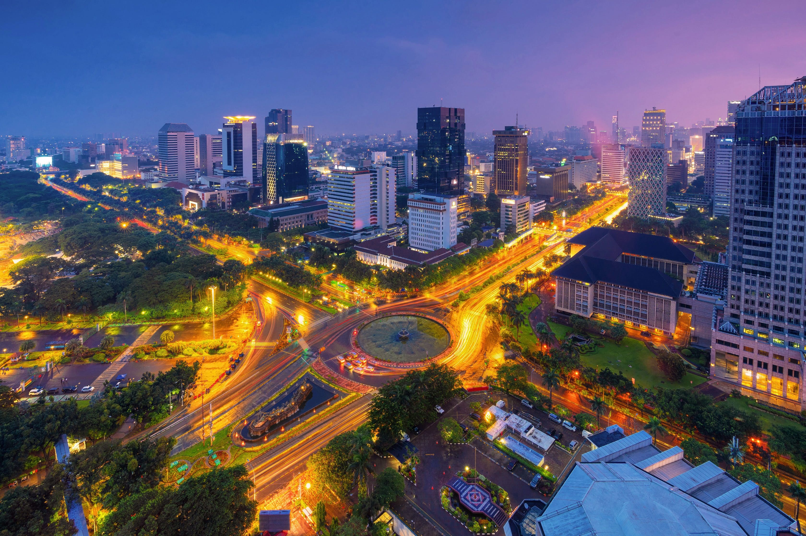
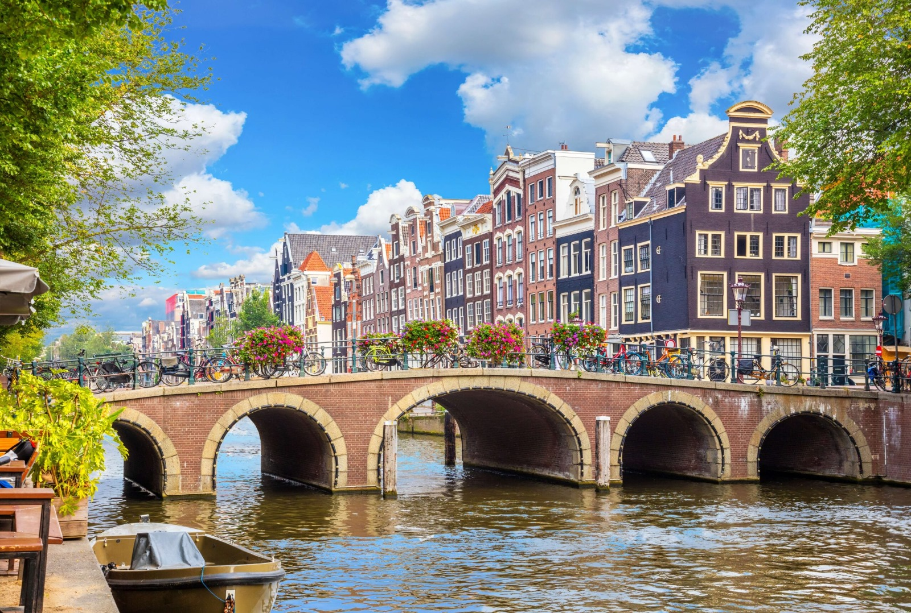
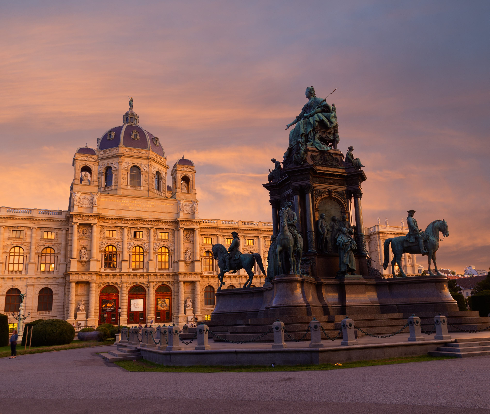

There's nothing like the anticipation of an upcoming vacation.
Our specially crafted list of vacation spots will ensure than you and your loved ones have unforgettable experiences and fun adventures of a lifetime.
From snowy wonderlands to picturesque beaches, let our list help you decide the perfect getaway.

Seoul
Seoul, a city that many have referred to as “the city that never sleeps”. A nickname well-earned because of the exuberant and lively nightlife. Many bars and clubs stay open as late as 6am and it is not uncommon for partygoers to exit a club or bar and head into a restaurant for breakfast. If you’re a big foodie, Seoul is the place to be, there are several dining options available, including street food vendors, restaurants, and cafés. Not only are there endless dining options but there are also an endless number of cuisines, ranging from the traditional dishes to the modern renditions. If you prefer to cook yourself, the Seoul marketplaces are full of diverse and fresh ingredients for you to use. The city is full of ancient and contemporary architecture allowing you to experience Seoul’s past and present. Amongst the ancient architecture is Gyeongbokgung Palace which is the largest, historic royal palace in Seoul. For the architecture enthusiasts this palace is definitely worth checking out because of its vibrant hues, intricate detailing, and remarkable curved roofs.

Jakarta
The capital city of Indonesia, Jakarta, is a multi-cultural city reflected in its ethnic diversity. The major ethnic groups of Jakarta include the Javanese, the Betawi, the Sundanese and the Chinese. This means that this city is extremely diverse allowing you to immerse yourself in a variety of cultures at the same time. This might be done through the cuisine, festivals, or art. If historical landmarks are your thing, Jakarta is the place to be, featuring a plenitude of architectural treasures. Here is a list of noteworthy ones: National Monument, Cikini Hospital, Museum Nasional, Gedung Kesenian Jakarta, Tugu Church. The biggest shopping mall in Indonesia is in its capital city and it’s called the Mal Taman Anggrek. Covering a space of 360,000 sqm, this is the destination of choice for the shopaholics and the fashion enthusiasts. This mall is home to more than 400 shops many of which include luxury brands. There are so many things to do, from ice skating to watching movies at the cinema to eating at restaurants.

Mumbai
Mumbai's vibrant art scene comprises of contemporary and traditional art, allowing you to enjoy the allure of both. A great place to visit to appreciate both is the Jehangir Art Gallery. Established in 1952, this gallery is free to visit which is perfect for those who are visiting Mumbai that went to save a little money. The galley also features regular art exhibitions allowing artists to demonstrate their talent. For those wanting to magic and glamour of Indian cinema, Mumbai, is perfect for you as it’s the home of Bollywood. There are many Bollywood related events. One such events is the Bollywood museums that allow you to explore the history of Indian cinema. Another such event is film studio tours. These allow you to take a look at the behind the scenes of many blockbuster films. Mumbai has a vast array of street food. Some famous street food stalls include the Bhendi Bazaar, Crawford market, Aaron’s Bake and Jai Jawan. Marine Drive, also known as Queen’s lace, is a road in Mumbai that allows you to enjoy the stunning views of the Arabian sea. Visit the iconic Gateway of India landmark which offers a different view of the Arabian sea.

Amsterdam
Amsterdam, the capital of the Netherlands, is a beautiful city with many things to do. For art enthusiasts, over 200 of the world-famous paintings of Van Gogh can be seen at the Van Gogh Museum which contains the largest collection of his works. Most notably the paintings “Starry Night”, “Almond Blossoms”, “The Potato Eaters” are found in this museum. For those who are fans of Van Gogh this is the perfect opportunity to truly immerse yourself in his life and art and you can do this by visiting the exhibitions that take place every now and then. This city is famous for its canals the most ionic one being the Prinsengracht canal. There are a number of monuments along the canal including: the Anne Frank House, the Westerkerk, the Tulip Museum and much more. Amsterdam has a very unique type of restaurant called FEBO which is a walk-up type of restaurant where vending machines in the walls dispense food. Enjoy culinary delights from FEBOs such as Stroopwafels, Frietjes, Appletaarts and Oliebollen.

London
One of the most culturally divers cities in the world, London is a city full of wonders and brimming with awe-inspiring sights. Home to a diverse range of cuisines including Chinese cuisines, Italian cuisines, Middle Eastern cuisines, Spanish cuisines, and African cuisines. For those looking for authentic Chinese food in London, visiting Chinatown is a must. Amongst the authentic dishes is dim sum, Peking duck, noodles, hot and sour soup, Chinese desserts. Visit iconic landmarks such as the Elizabeth Tower, the Palace of Westminster, the London Eye, the 02 Arena and the Tower Bridge. Modern architecture is very prominent in London with iconic buildings such as the Walkie-Talkie building, the Shard, the Gherkin, and the Lloyd’s building. The shard is the tallest building in the United Kingdom standing at 309.6 metres. It contains the 19-floor extravagant Shangri-La Hotel and many fancy, high-end restaurants. The Lloyd’s building has a very unique appearance as it looks like it is inside out! This is an intentional design choice by architect company Richard Rogers & Partners.

Vienna
Vienna, the capital of Austria, is waiting to be explored by fans of classical music as this wonderful and beautiful city contains one of the world’s greatest opera houses, the Vienna State Opera. Founded in 1869, this opera house is regarded as the best of the best and will definitely satiate your appetite for classical music. Some of the most famous composers performed here. Some notable composers include Mozart, Strauss, Wagner. If classical music is not your thing, this opera is still definitely worth a visit because of its exquisite décor and architecture. The magnificent Schönbrunn Palace is definitely a monument worth visiting. It first opened in 1700 and holds great historical significance. It was also the childhood home of the famous queen Marie Antionette. Those who love dessert need to visit Vienna as there are endless options. Here are some desserts you must try when you visit Vienna: Sachertorte, Apfelstrudel, Kaiserschmarrn, Esterhazy torte. The dessert Sachertorte is so famous that it has its own holiday called the National Sacher Torte Day which falls on the 5th of December.